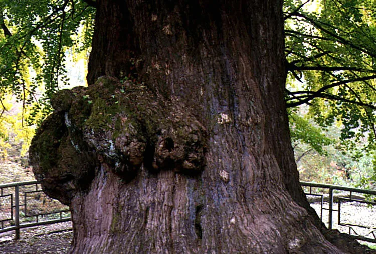
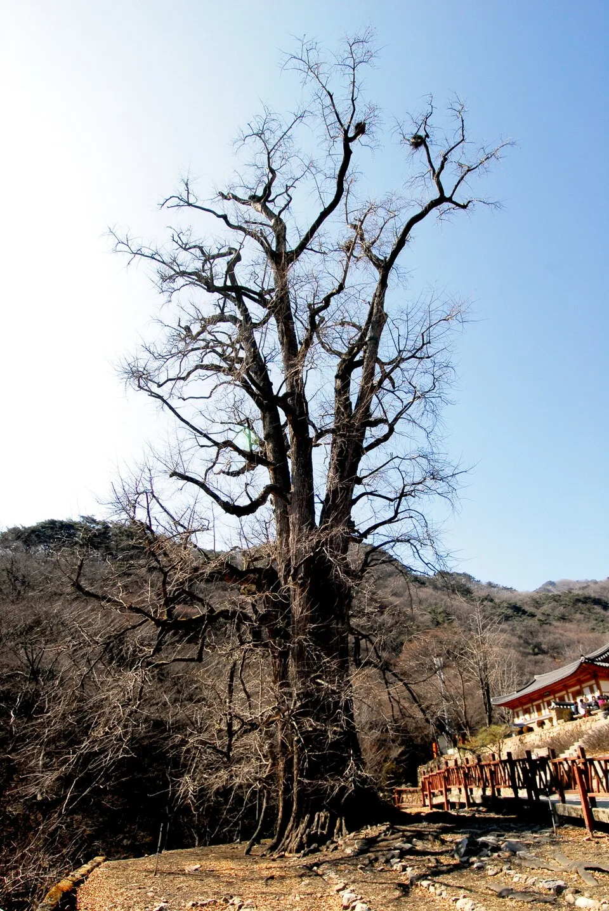
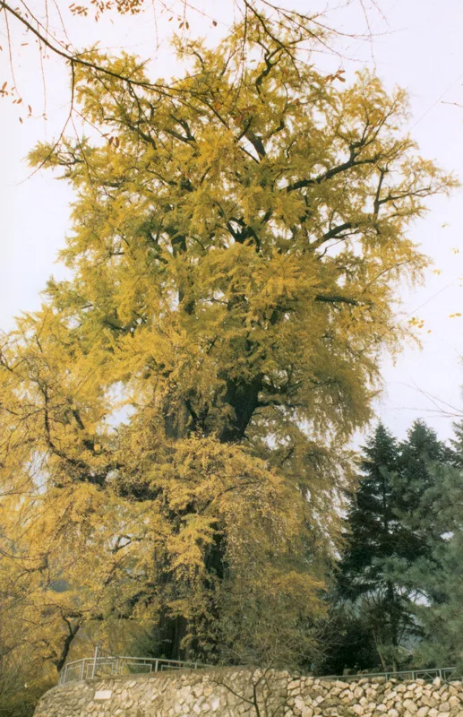
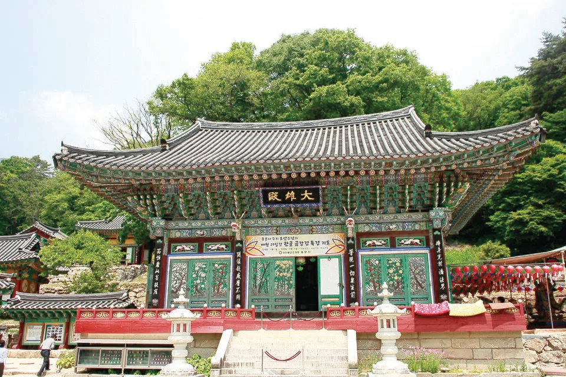
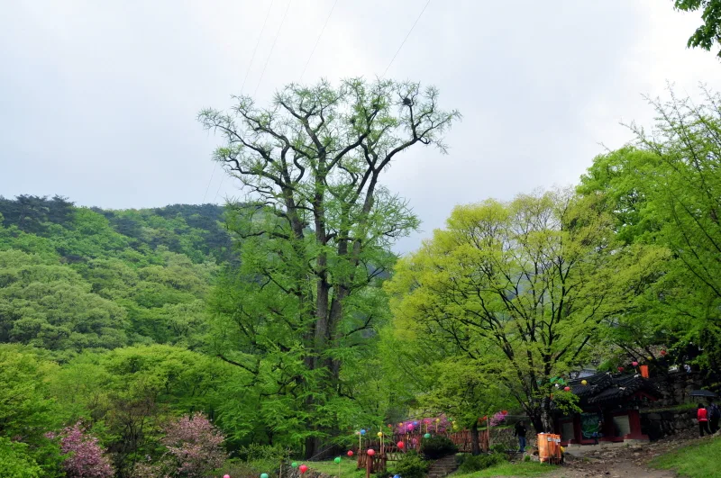

▲ 온몸이 황금빛으로 물든 양평 용문사 은행나무. 천연기념물 제30호로, 수령은 약 1,100년으로 추정된다 ⓒ Wikimedia Commons
경기 양평군 용문면, 용문산 자락의 용문사 경내에는 나이를 가늠하기 어려운 은행나무 한 그루가 서 있다. 천연기념물 제30호로 지정된 이 나무는 수령이 약 1,100년으로 추정될 만큼 오래됐고, 국내에 남아 있는 은행나무 가운데 가장 크고 오래된 나무 중 하나로 꼽힌다. 매년 가을이면 전국에서 이 나무의 단풍을 보러 사람들이 몰리는데, 정작 '언제가 절정인지', '어떻게 가야 하는지'는 의외로 정리된 정보가 많지 않다. 이 기사는 단풍 시기부터 입장료·주차·교통, 그리고 최근 논의되고 있는 케이블카 계획까지 방문에 필요한 정보를 정리했다.
1. 천년의 은행나무, 무엇이 특별한가

▲ 삼층석탑과 전각 처마 너머로 보이는 용문사 은행나무. 절 마당 어디서 봐도 나무가 하늘을 가릴 만큼 크다 ⓒ Wikimedia Commons
국가유산청(옛 문화재청) 국가유산포털에 따르면 용문사 은행나무는 1962년 12월 7일 천연기념물로 지정됐다(지정 당시 문화재 번호는 제30호였고, 2021년 문화재청이 문화재 지정번호 제도를 폐지한 뒤로는 공식 표기에서 번호를 따로 쓰지 않는다). 국가유산포털의 지정 정보 화면에는 소재지와 지정일만 게재돼 있어 수령·높이·둘레의 '공식 단일 수치'가 별도로 명시돼 있지는 않다. 다만 여러 학술·언론 자료에 공통으로 등장하는 수치는 수령 약 1,100년, 뿌리 부분 둘레 약 15.2m다. 높이는 측정 시점과 방식에 따라 38.8m~42m 사이로 기록이 갈리는데, 이는 나무가 워낙 크고 가지가 사방으로 뻗어 있어 측정 기준(수관 최상단 vs 주간 높이)에 따라 오차가 생기기 때문으로 보인다. 나무가 워낙 커 '동양에서 가장 큰 은행나무 중 하나'로도 종종 소개되지만, 이는 공인된 순위라기보다 오랫동안 구전돼 온 표현에 가깝다.
나무의 기원에 대해서는 두 가지 전설이 전해진다. 하나는 신라의 마지막 왕자였던 마의태자가 나라를 잃은 뒤 금강산으로 향하던 길에 심었다는 설, 다른 하나는 신라의 고승 의상대사가 짚고 다니던 지팡이를 꽂아둔 것이 뿌리를 내렸다는 설이다. 어느 쪽이 사실이든, 신라 말~고려 초까지 거슬러 올라가는 나이는 이 나무를 단순한 관광지가 아니라 살아있는 문화유산으로 만든다.

▲ 은행나무 밑동에 형성된 거대한 옹이. 오랜 세월의 흔적이 나무껍질 질감으로 고스란히 남아 있다 ⓒ Wikimedia Commons
2. 단풍은 언제 절정일까

▲ 절정에 이른 용문사 은행나무. 잎 전체가 고르게 노랗게 물들어야 비로소 '절정'이라 부를 수 있다 ⓒ 문화재청
은행나무는 단풍나무·참나무류보다 대체로 늦게 물든다. 용문사 은행나무도 예외가 아니어서, 일반적으로 10월 말에서 11월 초 사이에 잎 전체가 노랗게 물드는 절정을 맞는 경우가 많다. 다만 이는 해마다 기온에 따라 며칠씩 앞뒤로 움직이는 값이라는 점을 감안해야 한다. 9월 말~10월 기온이 평년보다 높은 해에는 절정이 그만큼 늦춰지는 경향이 있으므로, 방문 1~2주 전 최신 기상 정보와 현지 탐방 후기를 함께 확인하는 것이 안전하다. 절정을 살짝 앞둔 시점, 즉 잎이 8할 정도 물들었을 때 오히려 초록과 노랑이 섞여 더 화려하게 보인다는 평가도 있다.
3. 용문사 접근 정보 — 주소·교통·입장료·주차

▲ 용문사 대웅전. 은행나무는 대웅전에서 멀지 않은 경내 초입에 서 있다 ⓒ Wikimedia Commons
| 구분 | 내용 |
|---|---|
| 주소 | 경기 양평군 용문면 용문산로 782 (신점리 626-1) |
| 대중교통 | 경의중앙선 용문역 하차 → 용문산 방면 버스(25·28번 등) 환승, 약 20분 |
| 자가용 | 서울양양고속도로 서종IC 또는 중부내륙고속도로 남양평IC 경유 |
| 입장료 | 어른 2,000원 / 청소년 1,500원 / 어린이 1,000원 |
| 주차료 | 소형 1,000원 / 중대형 3,000원 / 버스 5,000원 |
| 운영시간 | 상시개방(연중무휴) |
주차장은 넓은 편이지만 단풍 절정 주말에는 오전 일찍부터 붐빈다. 용문역에서 버스로 이동하면 주차난을 피할 수 있다는 점도 참고할 만하다.
4. 용문산 자연휴양림과 함께 둘러보기

▲ 계절을 달리해 찍은 용문사 은행나무. 산세 속에서 나무의 실제 규모를 가늠할 수 있다(사진은 봄철 촬영) ⓒ Wikimedia Commons
용문사 바로 곁에는 '양평 백운봉 자연휴양림(용문산자연휴양림)'이 있어 은행나무 단풍 산책만으로 아쉽다면 함께 묶어 일정을 짤 수 있다. 입장료는 무료이며, 주차료는 경차 1,500원, 중소형 3,000원 수준이다. 숲길 트레킹이나 캠핑을 겸한 1박 일정으로도 꾸릴 수 있다.
5. 지금은 없다 — 2030년 목표 용문산 케이블카 계획
용문사·용문산을 검색하다 보면 '케이블카'를 함께 언급하는 글을 종종 보게 되는데, 2026년 9월 현재도 용문산에는 운행 중인 케이블카가 없다. 다만 양평군이 민간자본을 유치해 용문산관광지에서 정상 부근 가섭봉까지 케이블카를 놓는 사업을 추진하고 있는 것은 사실이다. 경인일보 보도에 따르면 사업비는 약 887억원 규모이며, 양평군은 2030년 운행 개시를 목표로 하고 있다. 노선은 초기 '대하섬-강하' 구간에서 현재의 '용문산관광지-가섭봉' 구간으로 변경됐고, 양평군은 최초 검토했던 민관 협력 방식 대신 민간자본 단독 투자 방식으로 사업 구조를 바꿔 투자자를 물색하고 있는 단계다. 아직 사업을 실제로 맡아 시행할 민간 사업자조차 확정되지 않았고, 주민 의견 수렴 절차 등도 충분히 이뤄지지 않았다는 우려가 지역 언론을 통해 계속 제기되고 있어, 실제 착공·개통 시점은 여전히 유동적이다. 올가을 방문을 계획하고 있다면 케이블카가 아니라 도보·차량으로 접근해야 한다는 점을 기억해두자.
케이블카 추진 소식 기사에서 확인 가능6. 방문 전 체크리스트
✅ 양평 용문사 은행나무, 가기 전 확인할 것
· 단풍 절정은 통상 10월 말~11월 초, 해마다 기온에 따라 변동
· 입장료 어른 2,000원, 주차료 소형 1,000원
· 대중교통은 용문역에서 버스 환승, 주말엔 주차장이 이른 시간부터 혼잡
· 케이블카는 아직 없다 — 2030년 개통 목표로 계획 단계일 뿐, 현재는 도보·차량 이동만 가능
· 용문산 자연휴양림과 묶어 반나절~1박 일정으로 확장 가능
수령 약 1,100년, 천연기념물 제30호라는 타이틀만으로도 용문사 은행나무는 한 번쯤 찾아갈 이유가 충분하다. 다만 케이블카 같은 아직 실현되지 않은 정보에 기대 일정을 짜기보다는, 현재 확인된 교통·요금 정보를 기준으로 움직이는 편이 안전하다.